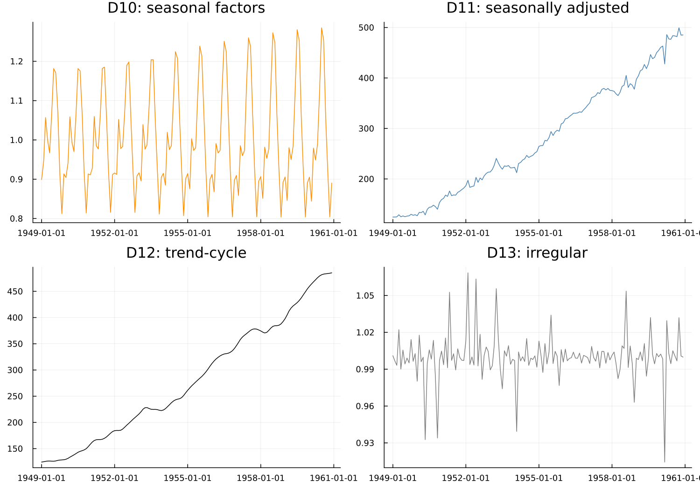

7. The B, C and D Tables
7.1 Why iterate three times
Chapter 4's toy filter ran three identical passes and watched the seasonal estimate settle down. Real X-11 also runs multiple passes, but they are not identical — each one does a specific job, informed by what the previous pass learned:
- B is the first, crude estimate — trend, SI ratios, seasonal factors, computed the direct way.
- C repeats the estimate using B's own results to identify and down-weight extreme values first (Chapter 8), so the trend and seasonal are no longer distorted by whatever caused them.
- D repeats once more against the cleaned-up C-pass estimates, and is final.
Better information about extreme values at each stage produces a better trend, which produces better SI ratios, which produces a better seasonal estimate — the same convergence logic Chapter 4 demonstrated directly, now split across passes that each do a genuinely different job rather than literally repeating the same computation.
7.2 The naming scheme
Every table in the B, C and D passes is named <letter><number> — B1, C9, D11, and so on — and the numbering carries real information rather than being arbitrary:
Within the core block, the second digit means the same thing in every pass. 10 is seasonal factors, 11 is the seasonally adjusted series, 12 is the trend-cycle, 13 is the irregular. So B10, C10 and D10 are the same quantity at three successive stages of refinement, and D10 — the final pass — is the one actually used.
That single sentence makes a dozen table names learnable instead of memorised. It holds specifically for the 10–13 block; it does not extend to every table in every pass (there are 281 saveable tables in total, most of them diagnostics rather than core decomposition steps), so treat it as the key to the core sequence, not a universal rule. handoff/x13-saveable-tables.md in this project's own working documents has the full catalogue if a specific table beyond D10–D13 is needed.
X13Result maps the final D-pass directly onto typed fields, and everything from here on uses those names — result.seasonal_factors, result.seasonally_adjusted, result.trend, result.irregular — rather than the raw table codes:

Read top-to-bottom-left-to-right and the whole method is legible at once: seasonal factors, seasonally adjusted series, trend-cycle, irregular — the last three of which, multiplied back together, exactly reconstruct the first.
The holiday-factor series is table A7 in the Census Bureau's own numbering, but requesting it means asking for regression.holiday, and it lands on disk as .hol, not .a7. Only a10 and a13 happen to be spelled as their own table numbers. This is a real trap, not a hypothetical one — it produced a genuinely wrong table-availability analysis once during this package's own development, caught only by checking against the real binary's actual file output rather than the Reference Manual's table listing alone.
7.3 Where to look things up
D10–D13 is a small, memorable core. The other 277 saveable tables — every diagnostic, every intermediate step, every SEATS-side equivalent — are not worth memorising, and this book does not try to. series fetches any of them by symbol once the name is known; handoff/x13-saveable-tables.md is where to find the name.
See also: Chapter 8 for what the B-to-C step's extreme-value handling actually does. Chapter 9 for the asymmetric-filter problem that applies identically inside every one of these passes.